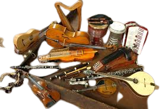

About-Us:
Music instruments of Pakistan
MUSICAL INSTRUMENTS
Ancient
Pakistan's cultural heritage includes a large number of musical instruments: stringed (plucked or bowed), wind and percussion. Each instrument has its own peculiar structural and tonal characteristics, producing unique effects of pitch, loudness, thickness and intensity of tone that differentiate it from the rest.
Plucked stringed instruments: Sitar, Rubab, Iktara, Soor Bahar, Sarod, Taanpura, Damboora, Soorsinghar, Banjo, Veena, Vichatra Santoor.
Bowed stringed instruments: Sarangi, Sarinda, Taos, Siroz, Dilruba
Wind instruments: Bansuri, Soornai, Been, Shehnai, Alghoza
Percussion instruments: Tabla, Khunjari, Ghara, Dhol, Tanboor, Dholak, Naqarah, Chimta,Pikhavaj.
A small number of stringed and percussion instruments, and a seven-key flute, have been unearthed from the ruins of Moenjodaro and Harappa, indicated their origin at an earlier stage. According to the Ramain, a Hindu holy book which gives information on primitive musical instruments, the oldest instrument is said to be the gatra veena, in which sound was produced by clapping, beating the thighs and chest with the hands, and stamping the feet on the ground.
Bhoomi Dandobi was a primitive percussion instrument. A pit was covered with skin, and this was played with sticks. The Sarswati Veena was a zither with one hundred strings, and the mookha veena was another instrument of the same kind. The Sarasvati Veena and Vichatra Veena are still in use for both solo playing as an accompaniment to vocal music. The sound of the Veena is supposed to come closest to the human voice. Around eighteen types of veena have been described in different texts. A melody produced on a veena is really mellow and pleasing.
